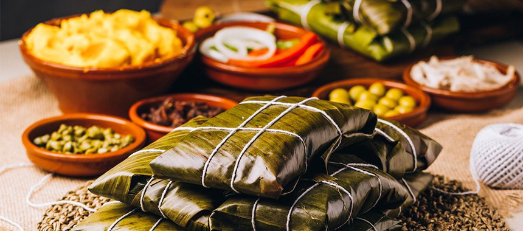
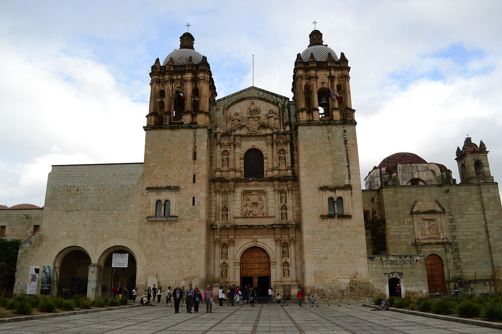

La gastronomía oaxaqueña es especial por el tipo de preparación que ofrecen en sus platillos. La magia de los tamales oaxaqueños es que son envueltos ya sea en hoja de totomoxtle o de plátano lo que genera que le dé un saber inigualable.

es un ejemplo de la arquitectura barroca novohispana. Los primeros proyectos de construcción del edificio datan del año 1551, en que el Ayuntamiento de la Antequera de Oaxaca cedió a la Orden Dominica un total de veinticuatro lotes para la construcción de un convento en la ciudad.

Notas relevantes:
Limita al norte con Puebla y
Veracruz, al este con Chiapas, al sur con el
océano Pacífico y al oeste con Guerrero. Con 93
757 km², es el quinto estado más extenso
Con 4 132 148 de habitantes en 2020, el décimo más
poblado. Se fundó el 21 de diciembre de 1823.
Oaxaca proviene del náhuatl "huáxyacac" que
significa "en la punta de los huajes".
Entre los oaxaqueños más relevantes destacan
Benito Juárez, Porfirio Díaz y, en las artes
plásticas los pintores Rufino Tamayo, Rodolfo
Morales y Francisco Toledo.